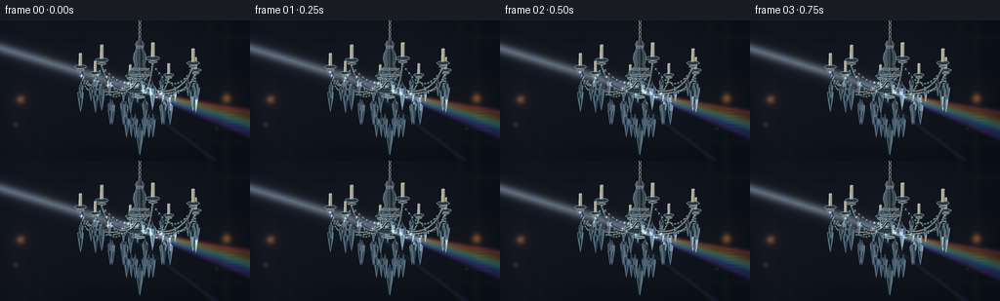
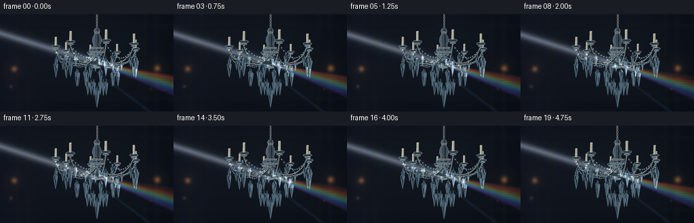

CODING AGENTS AS PIXEL WORLD MODELS
traex/GPT-6.1-Sol · phygen_087
点击播放 · 原生 RGB 像素
逐轮保存的候选
回放视频、检查图与代码变化。
每份候选均可单独播放。实际图片检查记录在下方工具轨迹中。
候选 01播放与检查图
点击播放 · 原生 RGB 像素


展开代码变化
--- 上一保存版本
+++ 本次保存版本
@@ -0,0 +1,334 @@
+from pathlib import Path
+import json, math
+import numpy as np
+from PIL import Image, ImageDraw, ImageFilter
+import artifact_io
+
+ROOT=Path(__file__).resolve().parent
+SPEC=json.loads((ROOT/'task_spec.json').read_text())
+W,H=SPEC['width'],SPEC['height']
+S=4
+SW,SH=W*S,H*S
+rng=np.random.default_rng(8707)
+Y,X=np.mgrid[0:SH,0:SW].astype(np.float32); X/=S; Y/=S
+
+def line(draw,pts,fill,width=1):
+ draw.line([(round(x*S),round(y*S)) for x,y in pts], fill=fill,width=max(1,round(width*S)),joint='curve')
+def ellipse(draw,box,fill,outline=None,width=1):
+ draw.ellipse(tuple(round(q*S) for q in box),fill=fill,outline=outline,width=max(1,round(width*S)))
+def polygon(draw,pts,fill):
+ draw.polygon([(round(x*S),round(y*S)) for x,y in pts],fill=fill)
+
+def background():
+ # A dark, softly defocused panelled interior, not an empty black stage.
+ a=np.empty((SH,SW,3),np.float32)
+ base=0.34*np.exp(-((X-137)/120)**2-((Y-57)/100)**2)
+ a[:]=[7,11,18]
+ a+=base[...,None]*np.array([31,36,42])
+ a+=np.exp(-((X-12)/53)**2)[...,None]*np.array([6,6,9])
+ im=Image.fromarray(np.uint8(a.clip(0,255)))
+ d=ImageDraw.Draw(im)
+ # recessed panelling and subdued brass trims
+ for x in [27,43,214,231]:
+ line(d,[(x,-5),(x,150)],(26,29,32),1.5)
+ line(d,[(x+1,-5),(x+1,150)],(9,14,20),1)
+ for ya in [17,125]:
+ line(d,[(-5,ya),(261,ya)],(24,27,30),1)
+ line(d,[(-5,ya+2),(261,ya+2)],(12,17,24),1)
+ for b in [(47,25,207,119),(50,28,204,116)]:
+ d.rectangle(tuple(round(v*S) for v in b),outline=(20,24,29),width=S)
+ im=im.filter(ImageFilter.GaussianBlur(2.5*S))
+ b=np.asarray(im).astype(np.float32)
+ # Out-of-focus distant warm wall lights
+ for bx,by,r,c in [(21,81,3.0,(84,48,20)),(232,80,3.3,(91,52,21)),(16,107,1.8,(36,21,12)),(222,111,1.1,(24,18,10))]:
+ g=np.exp(-((X-bx)**2+(Y-by)**2)/(2*r*r))
+ b+=g[...,None]*c
+ b+=np.exp(-((X-bx)**2+(Y-by)**2)/(2*(r*3.7)**2))[...,None]*np.array(c)*.1
+ return b
+BG=background()
+
+# Perspective projection for a real, tiered chandelier geometry.
+def proj(p,t):
+ x,y,z=p
+ theta=.009*math.sin(t*.8)
+ x,z=x*math.cos(theta)+z*math.sin(theta),z*math.cos(theta)-x*math.sin(theta)
+ f=1/(1+z/370)
+ return np.array([143+x*f, 20+(y+.23*z)*f])
+
+def curve(points,n=70):
+ p=np.array(points,float)
+ tt=np.linspace(0,1,n)[:,None]
+ return (1-tt)**3*p[0]+3*(1-tt)**2*tt*p[1]+3*(1-tt)*tt**2*p[2]+tt**3*p[3]
+
+# The seven arms surround the central stem instead of lying on one flat plane.
+ARMS=[]
+for k in range(8):
+ ang=2*np.pi*k/8+.19
+ xx,zz=math.cos(ang),math.sin(ang)
+ points=curve([(xx*5,43,zz*5),(xx*27,66,zz*27),(xx*60,50,zz*60),(xx*60,29,zz*60)])
+ ARMS.append({'angle':ang,'tip':np.array([xx*60,29,zz*60]),'curve':points,'z':zz*45})
+ARMS.sort(key=lambda ar:-ar['z'])
+
+# Crystal swags follow sagging catenary-like curves in space.
+SWAGS=[]
+for k in range(8):
+ aa=2*np.pi*k/8+.19; bb=2*np.pi*(k+1)/8+.19
+ A=np.array([60*np.cos(aa),35,60*np.sin(aa)])
+ B=np.array([60*np.cos(bb),35,60*np.sin(bb)])
+ n=14
+ pts=[]
+ for u in np.linspace(0,1,n):
+ p=A*(1-u)+B*u; p[1]+=15*math.sin(np.pi*u)
+ pts.append(p)
+ SWAGS.append(pts)
+ pts=[]
+ for u in np.linspace(0,1,17):
+ p=np.array([0,31,0])*(1-u)+A*u; p[1]+=24*math.sin(np.pi*u)
+ pts.append(p)
+ SWAGS.append(pts)
+
+# Hanging prisms are cut into crown, girdle and long pointed pavilion facets.
+DROPS=[]
+for k in range(8):
+ a=2*np.pi*k/8+.19
+ for off, yy, rr, length in [(-.14,47,2.25,14),(.0,52,3.25,22),(.14,47,2.25,14)]:
+ x=60*np.cos(a+off); z=60*np.sin(a+off)
+ DROPS.append((np.array([x,yy,z]),rr,length,k*.7+off))
+for k in range(9):
+ a=2*np.pi*k/9
+ DROPS.append((np.array([31*np.cos(a),64,31*np.sin(a)]),3.0,23,k*.63))
+for k in range(6):
+ a=2*np.pi*k/6+.2
+ DROPS.append((np.array([14*np.cos(a),79,14*np.sin(a)]),2.7,21,k*.8))
+DROPS.append((np.array([0,89,-2]),4.3,29,.3))
+DROPS.sort(key=lambda it:-it[0][2])
+
+DUST=[(rng.uniform(-10,270),rng.uniform(5,144),rng.uniform(.12,.38),rng.uniform(0,6.3),rng.uniform(.12,.45)) for _ in range(63)]
+
+def beam_geometry(t):
+ hit_y=73+2.7*math.sin(t*.77-.5)
+ slope=.305+.013*math.sin(t*.6)
+ return hit_y,slope
+
+def illum(x,y,t):
+ h,m=beam_geometry(t)
+ dis=(y-(h+m*(x-143)))/math.sqrt(1+m*m)
+ return math.exp(-.5*(dis/5.1)**2)
+
+
+def atmosphere(t):
+ b=BG.copy()
+ h,m=beam_geometry(t)
+ center=h+m*(X-143)
+ dist=(Y-center)/math.sqrt(1+m*m)
+ incoming=np.clip((145-X)/5,0,1)
+ # A collimated white sunlight shaft, with a soft volumetric boundary.
+ beam=np.exp(-.5*(dist/3.5)**2)*incoming
+ beam+=.23*np.exp(-.5*(dist/7.3)**2)*incoming
+ b+=beam[...,None]*np.array([61,65,69])
+ core=np.exp(-.5*(dist/.5)**2)*incoming
+ b+=core[...,None]*np.array([7,8,9])
+ travel=np.maximum(X-144,0)
+ outgoing=np.clip(travel/6,0,1)
+ # Dispersed spectral directions begin at the illuminated crystal cluster.
+ colors=[(117,24,14),(124,66,17),(102,101,23),(26,97,58),(19,83,109),(30,48,115),(67,31,100)]
+ for k,c in enumerate(colors):
+ mm=m+(k-3)*.037
+ yy=h+mm*(X-144)+.3*math.sin(t*.8)
+ width=1.0+.011*travel
+ d=(Y-yy)/math.sqrt(1+mm*mm)
+ val=np.exp(-.5*(d/width)**2)*outgoing*.29
+ b+=val[...,None]*np.array(c)
+ # Remaining unrefracted white light mixed with the rainbow envelope.
+ v=np.exp(-.5*(dist/3.2)**2)*outgoing*.31
+ b+=v[...,None]*np.array([64,67,68])
+ # Dim secondary rays: light redirected by individual hanging prisms.
+ for sx,sy,sl,c in [(114,64,.75,(30,53,74)),(162,78,.17,(63,43,27)),(143,96,.12,(25,38,54))]:
+ intensity=illum(sx,sy,t)
+ prog=X-sx
+ yy=sy+sl*prog
+ ray=np.exp(-.5*((Y-yy)/(1.0+.009*np.maximum(prog,0)))**2)*np.clip(prog/4,0,1)*intensity*.23
+ b+=ray[...,None]*c
+ # Subtle elongated caustic streaks on the far wall.
+ for j in range(7):
+ cx=235+j*.9; cy=h+(m+(j-3)*.037)*(cx-144)
+ g=np.exp(-((X-cx)/9)**2-((Y-cy)/1.1)**2)
+ b+=g[...,None]*np.array(colors[j])*.10
+ return b
+
+def metal(draw,pts,width=1.6):
+ line(draw,pts,(19,24,29),width+1.1)
+ line(draw,[(x-.25,y-.25) for x,y in pts],(98,103,102),width)
+ line(draw,[(x-.3,y-.45) for x,y in pts],(177,182,175),max(.3,width*.28))
+ line(draw,[(x+.3,y+.4) for x,y in pts],(38,45,49),max(.28,width*.28))
+
+SPARKS=[]
+def bead(draw,p,r,t,seed=0):
+ x,y=proj(p,t); strength=illum(x,y,t)
+ rr=r/(1+p[2]/370)
+ pts=[(x+rr*math.cos(a),y+rr*1.1*math.sin(a)) for a in np.arange(8)*np.pi/4]
+ polygon(draw,pts,(69+int(37*strength),94+int(53*strength),108+int(70*strength)))
+ polygon(draw,[(x-rr,y),(x,y-rr),(x-.2,y+.4)],(139,166,177))
+ polygon(draw,[(x+rr,y),(x,y+rr),(x+.2,y-.4)],(34,53,63))
+ line(draw,[(x-rr*.7,y-rr*.65),(x,y-rr),(x+rr*.55,y-rr*.45)],(193,216,223),.24)
+ if strength>.65 and math.sin(seed*8+t*1.4)>.2:
+ SPARKS.append((x-rr*.3,y-rr*.4,.15+strength*.25,0))
+
+
+def crystal(draw,p,r,length,phase,t):
+ p=p.copy()
+ p[0]+=.4*math.sin(t*.7+phase)
+ x,y=proj(p,t)
+ # small silver suspension loop and neck link
+ top=proj(p+np.array([0,-3.7,0]),t)
+ line(draw,[top,(x,y)],(119,130,134),.35)
+ ellipse(draw,(x-.7,y-2.2,x+.7,y-.6),None,(143,155,158),.3)
+ N=8
+ verts=[]
+ rings=[(0,.27),(.13,1),(.38,.81),(.86,.25),(1,0)]
+ for h,ra in rings:
+ for k in range(N):
+ ang=phase+k*2*np.pi/N+.016*math.sin(t*.7)
+ v=p+np.array([r*ra*math.cos(ang),h*length,r*ra*math.sin(ang)])
+ verts.append(v)
+ facets=[]
+ for row in range(4):
+ for k in range(N):
+ k2=(k+1)%N
+ inds=[row*N+k,row*N+k2,(row+1)*N+k2,(row+1)*N+k]
+ vs=np.array([verts[i] for i in inds])
+ normal=np.cross(vs[1]-vs[0],vs[3]-vs[0]); norm=np.linalg.norm(normal)
+ if norm<1e-8: continue
+ normal/=norm
+ if normal[2]>.17: continue
+ facets.append((np.mean(vs[:,2]),vs,normal,row,k))
+ facets.sort(key=lambda a:-a[0])
+ for zz,vs,n,row,k in facets:
+ pts=np.array([proj(v,t) for v in vs]); cx,cy=pts.mean(0)
+ lit=illum(cx,cy,t)
+ side=abs(n[0]); grazing=max(0,-n[2])
+ sref=max(0,np.dot(n,np.array([-.56,-.44,-.70])))
+ # Internal facets have contrasting transmitted and reflected surroundings.
+ bright=14+53*side+33*sref+lit*(23+77*sref)
+ pulse=(.5+.5*math.sin(phase*3+k*1.6+t*1.1))**12
+ bright+=lit*pulse*88
+ base=np.array([23,40,51])+bright*np.array([.83,.94,1.04])
+ if (k+row)%4==0:
+ base*=.43
+ # Thin chromatic reflections, never opaque rainbow-painted glass.
+ chroma=np.array([(1+math.sin(k*1.9+row)),(1+math.sin(k*1.9+row+2)),(1+math.sin(k*1.9+row+4))])
+ base+=chroma*lit*pulse*29
+ polygon(draw,pts,tuple(np.uint8(base.clip(0,250))))
+ edge=base*.77+np.array([25,31,33])
+ if lit>.4 and sref>.5: edge+=lit*38
+ line(draw,list(pts)+[pts[0]],tuple(np.uint8(edge.clip(0,255))),.21)
+ # Long razor-bright crown edge and pale reflected light on pavilion.
+ left=proj(p+np.array([-r*.75,length*.13,0]),t)
+ middle=proj(p+np.array([-r*.57,length*.39,-r*.5]),t)
+ tip=proj(p+np.array([0,length,0]),t)
+ strength=illum(x,y+length*.35,t)
+ line(draw,[left,middle,tip],(int(113+97*strength),int(146+85*strength),int(159+80*strength)),.33)
+ if strength>.42:
+ sparkle=(.5+.5*math.sin(t*1.4+phase*4))**9
+ if sparkle>.11:
+ SPARKS.append((middle[0],middle[1],strength*(.25+sparkle*.8),phase))
+
+
+def stem(draw,t):
+ # The hanging chain with alternating oval links.
+ for j in range(6):
+ x=143+.45*math.sin(t*.8)
+ y=-2+j*4.5
+ ellipse(draw,(x-1.2,y,x+1.2,y+5.1),None,(133,140,139),.65)
+ line(draw,[(x-.7,y+.8),(x-.7,y+3.8)],(204,202,187),.23)
+ # Turned, cut-glass central column.
+ prof=[(21,3),(25,5),(27,3.4),(30,4),(34,6.2),(40,7.0),(46,5.1),(50,8.5),(53,12.3),(57,10),(61,5),(66,3.3)]
+ for k in range(12):
+ a=2*np.pi*k/12
+ b=2*np.pi*(k+1)/12
+ pts=[proj([rr*math.cos(a),yy-20,rr*math.sin(a)],t) for yy,rr in prof]
+ pts+= [proj([rr*math.cos(b),yy-20,rr*math.sin(b)],t) for yy,rr in reversed(prof)]
+ if math.sin((a+b)/2)>0: continue
+ lum=45+55*abs(math.cos(a))
+ polygon(draw,pts,(int(lum*.77),int(lum*.94),int(lum*1.10)))
+ line(draw,pts[:len(prof)],(135,156,166),.35)
+ for yy,rr in [(27,4.1),(50,8.6),(56,10),(61,5.2),(66,4.3)]:
+ ellipse(draw,(143-rr,yy-1.3,143+rr,yy+1.3),(79,90,94),(164,174,173),.45)
+ # Bottom crystal cup and suspension ring.
+ ellipse(draw,(130,69,156,75),(34,49,58),(113,143,156),.55)
+ for j in range(11):
+ xx=131+j*2.2
+ line(draw,[(xx,71),(143+(xx-143)*.5,77)],(109,139,153),.37)
+ ellipse(draw,(138,77,148,80),(98,120,128),(178,197,200),.5)
+
+
+def arm(draw,ar,t):
+ pts=[proj(p,t) for p in ar['curve']]
+ metal(draw,pts,1.7)
+ p=ar['tip']; x,y=proj(p,t); f=1/(1+p[2]/370)
+ # Scalloped silver-and-glass candle dish.
+ ellipse(draw,(x-6*f,y-1.8*f,x+6*f,y+2.2*f),(36,50,61),(151,171,177),.5)
+ for off in np.linspace(-5,5,7):
+ line(draw,[(x+off*f,y+.1),(x+off*.65*f,y+4*f)],(109,140,157),.36)
+ ellipse(draw,(x-3.8*f,y+2.4*f,x+3.8*f,y+4.5*f),(69,84,91),(168,179,176),.45)
+ # Slim unlit ivory candle; sunlight rather than flame is the light source.
+ polygon(draw,[(x-1.5*f,y-13*f),(x+1.5*f,y-13*f),(x+1.6*f,y-1),(x-1.6*f,y-1)],(164,163,146))
+ line(draw,[(x-1.1*f,y-12*f),(x-1.1*f,y-1)],(220,216,192),.4)
+ line(draw,[(x+1.4*f,y-12*f),(x+1.4*f,y-1)],(83,93,91),.5)
+ ellipse(draw,(x-1.5*f,y-13.6*f,x+1.5*f,y-12.1*f),(192,189,170))
+ line(draw,[(x,y-13.0*f),(x+.2,y-14.3*f)],(32,33,30),.4)
+
+
+def frame(i):
+ global SPARKS
+ SPARKS=[]
+ t=i/SPEC['fps']
+ b=atmosphere(t)
+ im=Image.fromarray(np.uint8(b.clip(0,255)))
+ d=ImageDraw.Draw(im)
+ for ar in ARMS:
+ if ar['z']>0: arm(d,ar,t)
+ for pts in sorted(SWAGS,key=lambda pts:-np.mean(np.array(pts)[:,2])):
+ if np.mean(np.array(pts)[:,2])>0:
+ line(d,[proj(p,t) for p in pts],(84,100,113),.32)
+ for j,p in enumerate(pts): bead(d,p,.88,t,j*.29)
+ for p,r,l,ph in DROPS:
+ if p[2]>4: crystal(d,p,r,l,ph,t)
+ stem(d,t)
+ for ar in ARMS:
+ if ar['z']<=0: arm(d,ar,t)
+ for pts in sorted(SWAGS,key=lambda pts:-np.mean(np.array(pts)[:,2])):
+ if np.mean(np.array(pts)[:,2])<=0:
+ line(d,[proj(p,t) for p in pts],(116,131,139),.32)
+ for j,p in enumerate(pts): bead(d,p,.92,t,j*.29)
+ for p,r,l,ph in DROPS:
+ if p[2]<=4: crystal(d,p,r,l,ph,t)
+ b=np.asarray(im).astype(np.float32)
+ # Sparse, optical star glints on illuminated facets, with restrained bloom.
+ gl=Image.new('RGB',(SW,SH)); gd=ImageDraw.Draw(gl)
+ for x,y,power,phase in SPARKS:
+ power=min(power,1.25)
+ col=tuple(int(min(255,c*power)) for c in [209,225,241])
+ size=1.25+power*2.4
+ line(gd,[(x-size,y),(x+size,y)],col,.23)
+ line(gd,[(x,y-size*.80),(x,y+size*.80)],col,.23)
+ ellipse(gd,(x-.45,y-.45,x+.45,y+.45),col)
+ b+=np.asarray(gl).astype(np.float32)*.84
+ b+=np.asarray(gl.filter(ImageFilter.GaussianBlur(S*.8))).astype(np.float32)*1.65
+ # Fine dust moving slowly through the light shaft.
+ for bx,by,sz,ph,speed in DUST:
+ dx=bx+t*speed; dy=by+t*.32+.22*math.sin(ph+t)
+ strength=illum(dx,dy,t)*(.3+.7*(.5+.5*math.sin(ph+t*.4)))
+ if strength<.15: continue
+ g=np.exp(-((X-dx)**2+(Y-dy)**2)/(2*sz*sz))*strength
+ b+=g[...,None]*np.array([49,51,48])
+ # gentle photographic highlight rolloff
+ b=np.maximum(b,0)
+ b=np.where(b>220,220+35*(1-np.exp(-(b-220)/35)),b)
+ out=Image.fromarray(np.uint8(b.clip(0,255))).resize((W,H),Image.Resampling.LANCZOS)
+ return np.asarray(out)
+
+if __name__=='__main__':
+ frames=np.stack([frame(i) for i in range(SPEC['frames'])])
+ artifact_io.save(frames,ROOT)
+ print('Saved',frames.shape,'RGB frames')
可观测工具轨迹
实际执行的命令与返回图片。
命令 1exit 0
/bin/bash -lc 'ls -la && cat prompt.txt && cat GENERATION_RULES.md && cat task_spec.json'
命令 2exit 0
/bin/bash -lc "cat artifact_io.py && python - <<'PY'
import numpy, PIL
print('numpy',numpy.__version__)
PY"命令 3exit 0
/bin/bash -lc "cat > generate.py <<'PY'
from pathlib import Path
import json, math
import numpy as np
from PIL import Image, ImageDraw, ImageFilter
import artifact_io
ROOT=Path(__file__).resolve().parent
SPEC=json.loads((ROOT/'task_spec.json').read_text())
W,H=SPEC['width'],SPEC['height']
S=4
SW,SH=W*S,H*S
rng=np.random.default_rng(8707)
Y,X=np.mgrid[0:SH,0:SW].astype(np.float32); X/=S; Y/=S
def line(draw,pts,fill,width=1):
draw.line([(round(x*S),round(y*S)) for x,y in pts], fill=fill,width=max(1,round(width*S)),joint='curve')
def ellipse(draw,box,fill,outline=None,width=1):
draw.ellipse(tuple(round(q*S) for q in box),fill=fill,outline=outline,width=max(1,round(width*S)))
def polygon(draw,pts,fill):
draw.polygon([(round(x*S),round(y*S)) for x,y in pts],fill=fill)
def background():
# A dark, softly defocused panelled interior, not an empty black stage.
a=np.empty((SH,SW,3),np.float32)
base=0.34*np.exp(-((X-137)/120)**2-((Y-57)/100)**2)
a[:]=[7,11,18]
a+=base[...,None]*np.array([31,36,42])
a+=np.exp(-((X-12)/53)**2)[...,None]*np.array([6,6,9])
im=Image.fromarray(np.uint8(a.clip(0,255)))
d=ImageDraw.Draw(im)
# recessed panelling and subdued brass trims
for x in [27,43,214,231]:
line(d,[(x,-5),(x,150)],(26,29,32),1.5)
line(d,[(x+1,-5),(x+1,150)],(9,14,20),1)
for ya in [17,125]:
line(d,[(-5,ya),(261,ya)],(24,27,30),1)
line(d,[(-5,ya+2),(261,ya+2)],(12,17,24),1)
for b in [(47,25,207,119),(50,28,204,116)]:
d.rectangle(tuple(round(v*S) for v in b),outline=(20,24,29),width=S)
im=im.filter(ImageFilter.GaussianBlur(2.5*S))
b=np.asarray(im).astype(np.float32)
# Out-of-focus distant warm wall lights
for bx,by,r,c in [(21,81,3.0,(84,48,20)),(232,80,3.3,(91,52,21)),(16,107,1.8,(36,21,12)),(222,111,1.1,(24,18,10))]:
g=np.exp(-((X-bx)**2+(Y-by)**2)/(2*r*r))
b+=g[...,None]*c
b+=np.exp(-((X-bx)**2+(Y-by)**2)/(2*(r*3.7)**2))[...,None]*np.array(c)*.1
return b
BG=background()
# Perspective projection for a real, tiered chandelier geometry.
def proj(p,t):
x,y,z=p
theta=.009*math.sin(t*.8)
x,z=x*math.cos(theta)+z*math.sin(theta),z*math.cos(theta)-x*math.sin(theta)
f=1/(1+z/370)
return np.array([143+x*f, 20+(y+.23*z)*f])
def curve(points,n=70):
p=np.array(points,float)
tt=np.linspace(0,1,n)[:,None]
return (1-tt)**3*p[0]+3*(1-tt)**2*tt*p[1]+3*(1-tt)*tt**2*p[2]+tt**3*p[3]
# The seven arms surround the central stem instead of lying on one flat plane.
ARMS=[]
for k in range(8):
ang=2*np.pi*k/8+.19
xx,zz=math.cos(ang),math.sin(ang)
points=curve([(xx*5,43,zz*5),(xx*27,66,zz*27),(xx*60,50,zz*60),(xx*60,29,zz*60)])
ARMS.append({'angle':ang,'tip':np.array([xx*60,29,zz*60]),'curve':points,'z':zz*45})
ARMS.sort(key=lambda ar:-ar['z'])
# Crystal swags follow sagging catenary-like curves in space.
SWAGS=[]
for k in range(8):
aa=2*np.pi*k/8+.19; bb=2*np.pi*(k+1)/8+.19
A=np.array([60*np.cos(aa),35,60*np.sin(aa)])
B=np.array([60*np.cos(bb),35,60*np.sin(bb)])
n=14
pts=[]
for u in np.linspace(0,1,n):
p=A*(1-u)+B*u; p[1]+=15*math.sin(np.pi*u)
pts.append(p)
SWAGS.append(pts)
pts=[]
for u in np.linspace(0,1,17):
p=np.array([0,31,0])*(1-u)+A*u; p[1]+=24*math.sin(np.pi*u)
pts.append(p)
SWAGS.append(pts)
# Hanging prisms are cut into crown, girdle and long pointed pavilion facets.
DROPS=[]
for k in range(8):
a=2*np.pi*k/8+.19
for off, yy, rr, length in [(-.14,47,2.25,14),(.0,52,3.25,22),(.14,47,2.25,14)]:
x=60*np.cos(a+off); z=60*np.sin(a+off)
DROPS.append((np.array([x,yy,z]),rr,length,k*.7+off))
for k in range(9):
a=2*np.pi*k/9
DROPS.append((np.array([31*np.cos(a),64,31*np.sin(a)]),3.0,23,k*.63))
for k in range(6):
a=2*np.pi*k/6+.2
DROPS.append((np.array([14*np.cos(a),79,14*np.sin(a)]),2.7,21,k*.8))
DROPS.append((np.array([0,89,-2]),4.3,29,.3))
DROPS.sort(key=lambda it:-it[0][2])
DUST=[(rng.uniform(-10,270),rng.uniform(5,144),rng.uniform(.12,.38),rng.uniform(0,6.3),rng.uniform(.12,.45)) for _ in range(63)]
def beam_geometry(t):
hit_y=73+2.7*math.sin(t*.77-.5)
slope=.305+.013*math.sin(t*.6)
return hit_y,slope
def illum(x,y,t):
h,m=beam_geometry(t)
dis=(y-(h+m*(x-143)))/math.sqrt(1+m*m)
return math.exp(-.5*(dis/5.1)**2)
def atmosphere(t):
b=BG.copy()
h,m=beam_geometry(t)
center=h+m*(X-143)
dist=(Y-center)/math.sqrt(1+m*m)
incoming=np.clip((145-X)/5,0,1)
# A collimated white sunlight shaft, with a soft volumetric boundary.
beam=np.exp(-.5*(dist/3.5)**2)*incoming
beam+=.23*np.exp(-.5*(dist/7.3)**2)*incoming
b+=beam[...,None]*np.array([61,65,69])
core=np.exp(-.5*(dist/.5)**2)*incoming
b+=core[...,None]*np.array([7,8,9])
travel=np.maximum(X-144,0)
outgoing=np.clip(travel/6,0,1)
# Dispersed spectral directions begin at the illuminated crystal cluster.
colors=[(117,24,14),(124,66,17),(102,101,23),(26,97,58),(19,83,109),(30,48,115),(67,31,100)]
for k,c in enumerate(colors):
mm=m+(k-3)*.037
yy=h+mm*(X-144)+.3*math.sin(t*.8)
width=1.0+.011*travel
d=(Y-yy)/math.sqrt(1+mm*mm)
val=np.exp(-.5*(d/width)**2)*outgoing*.29
b+=val[...,None]*np.array(c)
# Remaining unrefracted white light mixed with the rainbow envelope.
v=np.exp(-.5*(dist/3.2)**2)*outgoing*.31
b+=v[...,None]*np.array([64,67,68])
# Dim secondary rays: light redirected by individual hanging prisms.
for sx,sy,sl,c in [(114,64,.75,(30,53,74)),(162,78,.17,(63,43,27)),(143,96,.12,(25,38,54))]:
intensity=illum(sx,sy,t)
prog=X-sx
yy=sy+sl*prog
ray=np.exp(-.5*((Y-yy)/(1.0+.009*np.maximum(prog,0)))**2)*np.clip(prog/4,0,1)*intensity*.23
b+=ray[...,None]*c
# Subtle elongated caustic streaks on the far wall.
for j in range(7):
cx=235+j*.9; cy=h+(m+(j-3)*.037)*(cx-144)
g=np.exp(-((X-cx)/9)**2-((Y-cy)/1.1)**2)
b+=g[...,None]*np.array(colors[j])*.10
return b
def metal(draw,pts,width=1.6):
line(draw,pts,(19,24,29),width+1.1)
line(draw,[(x-.25,y-.25) for x,y in pts],(98,103,102),width)
line(draw,[(x-.3,y-.45) for x,y in pts],(177,182,175),max(.3,width*.28))
line(draw,[(x+.3,y+.4) for x,y in pts],(38,45,49),max(.28,width*.28))
SPARKS=[]
def bead(draw,p,r,t,seed=0):
x,y=proj(p,t); strength=illum(x,y,t)
rr=r/(1+p[2]/370)
pts=[(x+rr*math.cos(a),y+rr*1.1*math.sin(a)) for a in np.arange(8)*np.pi/4]
polygon(draw,pts,(69+int(37*strength),94+int(53*strength),108+int(70*strength)))
polygon(draw,[(x-rr,y),(x,y-rr),(x-.2,y+.4)],(139,166,177))
polygon(draw,[(x+rr,y),(x,y+rr),(x+.2,y-.4)],(34,53,63))
line(draw,[(x-rr*.7,y-rr*.65),(x,y-rr),(x+rr*.55,y-rr*.45)],(193,216,223),.24)
if strength>.65 and math.sin(seed*8+t*1.4)>.2:
SPARKS.append((x-rr*.3,y-rr*.4,.15+strength*.25,0))
def crystal(draw,p,r,length,phase,t):
p=p.copy()
p[0]+=.4*math.sin(t*.7+phase)
x,y=proj(p,t)
# small silver suspension loop and neck link
top=proj(p+np.array([0,-3.7,0]),t)
line(draw,[top,(x,y)],(119,130,134),.35)
ellipse(draw,(x-.7,y-2.2,x+.7,y-.6),None,(143,155,158),.3)
N=8
verts=[]
rings=[(0,.27),(.13,1),(.38,.81),(.86,.25),(1,0)]
for h,ra in rings:
for k in range(N):
ang=phase+k*2*np.pi/N+.016*math.sin(t*.7)
v=p+np.array([r*ra*math.cos(ang),h*length,r*ra*math.sin(ang)])
verts.append(v)
facets=[]
for row in range(4):
for k in range(N):
k2=(k+1)%N
inds=[row*N+k,row*N+k2,(row+1)*N+k2,(row+1)*N+k]
vs=np.array([verts[i] for i in inds])
normal=np.cross(vs[1]-vs[0],vs[3]-vs[0]); norm=np.linalg.norm(normal)
if norm<1e-8: continue
normal/=norm
if normal[2]>.17: continue
facets.append((np.mean(vs[:,2]),vs,normal,row,k))
facets.sort(key=lambda a:-a[0])
for zz,vs,n,row,k in facets:
pts=np.array([proj(v,t) for v in vs]); cx,cy=pts.mean(0)
lit=illum(cx,cy,t)
side=abs(n[0]); grazing=max(0,-n[2])
sref=max(0,np.dot(n,np.array([-.56,-.44,-.70])))
# Internal facets have contrasting transmitted and reflected surroundings.
bright=14+53*side+33*sref+lit*(23+77*sref)
pulse=(.5+.5*math.sin(phase*3+k*1.6+t*1.1))**12
bright+=lit*pulse*88
base=np.array([23,40,51])+bright*np.array([.83,.94,1.04])
if (k+row)%4==0:
base*=.43
# Thin chromatic reflections, never opaque rainbow-painted glass.
chroma=np.array([(1+math.sin(k*1.9+row)),(1+math.sin(k*1.9+row+2)),(1+math.sin(k*1.9+row+4))])
base+=chroma*lit*pulse*29
polygon(draw,pts,tuple(np.uint8(base.clip(0,250))))
edge=base*.77+np.array([25,31,33])
if lit>.4 and sref>.5: edge+=lit*38
line(draw,list(pts)+[pts[0]],tuple(np.uint8(edge.clip(0,255))),.21)
# Long razor-bright crown edge and pale reflected light on pavilion.
left=proj(p+np.array([-r*.75,length*.13,0]),t)
middle=proj(p+np.array([-r*.57,length*.39,-r*.5]),t)
tip=proj(p+np.array([0,length,0]),t)
strength=illum(x,y+length*.35,t)
line(draw,[left,middle,tip],(int(113+97*strength),int(146+85*strength),int(159+80*strength)),.33)
if strength>.42:
sparkle=(.5+.5*math.sin(t*1.4+phase*4))**9
if sparkle>.11:
SPARKS.append((middle[0],middle[1],strength*(.25+sparkle*.8),phase))
def stem(draw,t):
# The hanging chain with alternating oval links.
for j in range(6):
x=143+.45*math.sin(t*.8)
y=-2+j*4.5
ellipse(draw,(x-1.2,y,x+1.2,y+5.1),None,(133,140,139),.65)
line(draw,[(x-.7,y+.8),(x-.7,y+3.8)],(204,202,187),.23)
# Turned, cut-glass central column.
prof=[(21,3),(25,5),(27,3.4),(30,4),(34,6.2),(40,7.0),(46,5.1),(50,8.5),(53,12.3),(57,10),(61,5),(66,3.3)]
for k in range(12):
a=2*np.pi*k/12
b=2*np.pi*(k+1)/12
pts=[proj([rr*math.cos(a),yy-20,rr*math.sin(a)],t) for yy,rr in prof]
pts+= [proj([rr*math.cos(b),yy-20,rr*math.sin(b)],t) for yy,rr in reversed(prof)]
if math.sin((a+b)/2)>0: continue
lum=45+55*abs(math.cos(a))
polygon(draw,pts,(int(lum*.77),int(lum*.94),int(lum*1.10)))
line(draw,pts[:len(prof)],(135,156,166),.35)
for yy,rr in [(27,4.1),(50,8.6),(56,10),(61,5.2),(66,4.3)]:
ellipse(draw,(143-rr,yy-1.3,143+rr,yy+1.3),(79,90,94),(164,174,173),.45)
# Bottom crystal cup and suspension ring.
ellipse(draw,(130,69,156,75),(34,49,58),(113,143,156),.55)
for j in range(11):
xx=131+j*2.2
line(draw,[(xx,71),(143+(xx-143)*.5,77)],(109,139,153),.37)
ellipse(draw,(138,77,148,80),(98,120,128),(178,197,200),.5)
def arm(draw,ar,t):
pts=[proj(p,t) for p in ar['curve']]
metal(draw,pts,1.7)
p=ar['tip']; x,y=proj(p,t); f=1/(1+p[2]/370)
# Scalloped silver-and-glass candle dish.
ellipse(draw,(x-6*f,y-1.8*f,x+6*f,y+2.2*f),(36,50,61),(151,171,177),.5)
for off in np.linspace(-5,5,7):
line(draw,[(x+off*f,y+.1),(x+off*.65*f,y+4*f)],(109,140,157),.36)
ellipse(draw,(x-3.8*f,y+2.4*f,x+3.8*f,y+4.5*f),(69,84,91),(168,179,176),.45)
# Slim unlit ivory candle; sunlight rather than flame is the light source.
polygon(draw,[(x-1.5*f,y-13*f),(x+1.5*f,y-13*f),(x+1.6*f,y-1),(x-1.6*f,y-1)],(164,163,146))
line(draw,[(x-1.1*f,y-12*f),(x-1.1*f,y-1)],(220,216,192),.4)
line(draw,[(x+1.4*f,y-12*f),(x+1.4*f,y-1)],(83,93,91),.5)
ellipse(draw,(x-1.5*f,y-13.6*f,x+1.5*f,y-12.1*f),(192,189,170))
line(draw,[(x,y-13.0*f),(x+.2,y-14.3*f)],(32,33,30),.4)
def frame(i):
global SPARKS
SPARKS=[]
t=i/SPEC['fps']
b=atmosphere(t)
im=Image.fromarray(np.uint8(b.clip(0,255)))
d=ImageDraw.Draw(im)
for ar in ARMS:
if ar['z']>0: arm(d,ar,t)
for pts in sorted(SWAGS,key=lambda pts:-np.mean(np.array(pts)[:,2])):
if np.mean(np.array(pts)[:,2])>0:
line(d,[proj(p,t) for p in pts],(84,100,113),.32)
for j,p in enumerate(pts): bead(d,p,.88,t,j*.29)
for p,r,l,ph in DROPS:
if p[2]>4: crystal(d,p,r,l,ph,t)
stem(d,t)
for ar in ARMS:
if ar['z']<=0: arm(d,ar,t)
for pts in sorted(SWAGS,key=lambda pts:-np.mean(np.array(pts)[:,2])):
if np.mean(np.array(pts)[:,2])<=0:
line(d,[proj(p,t) for p in pts],(116,131,139),.32)
for j,p in enumerate(pts): bead(d,p,.92,t,j*.29)
for p,r,l,ph in DROPS:
if p[2]<=4: crystal(d,p,r,l,ph,t)
b=np.asarray(im).astype(np.float32)
# Sparse, optical star glints on illuminated facets, with restrained bloom.
gl=Image.new('RGB',(SW,SH)); gd=ImageDraw.Draw(gl)
for x,y,power,phase in SPARKS:
power=min(power,1.25)
col=tuple(int(min(255,c*power)) for c in [209,225,241])
size=1.25+power*2.4
line(gd,[(x-size,y),(x+size,y)],col,.23)
line(gd,[(x,y-size*.80),(x,y+size*.80)],col,.23)
ellipse(gd,(x-.45,y-.45,x+.45,y+.45),col)
b+=np.asarray(gl).astype(np.float32)*.84
b+=np.asarray(gl.filter(ImageFilter.GaussianBlur(S*.8))).astype(np.float32)*1.65
# Fine dust moving slowly through the light shaft.
for bx,by,sz,ph,speed in DUST:
dx=bx+t*speed; dy=by+t*.32+.22*math.sin(ph+t)
strength=illum(dx,dy,t)*(.3+.7*(.5+.5*math.sin(ph+t*.4)))
if strength<.15: continue
g=np.exp(-((X-dx)**2+(Y-dy)**2)/(2*sz*sz))*strength
b+=g[...,None]*np.array([49,51,48])
# gentle photographic highlight rolloff
b=np.maximum(b,0)
b=np.where(b>220,220+35*(1-np.exp(-(b-220)/35)),b)
out=Image.fromarray(np.uint8(b.clip(0,255))).resize((W,H),Image.Resampling.LANCZOS)
return np.asarray(out)
if __name__=='__main__':
frames=np.stack([frame(i) for i in range(SPEC['frames'])])
artifact_io.save(frames,ROOT)
print('Saved',frames.shape,'RGB frames')
PY
python generate.py"命令 4exit 0
/bin/bash -lc "python - <<'PY'
from pathlib import Path
import numpy as np
from PIL import Image
p=Path('.')
a=np.load(p/'pixels.npz')['pixels']
f=np.stack([np.asarray(Image.open(p/'frames'/f'{i:02d}.png')) for i in range(20)])
assert a.shape==(144,256,20)
assert f.shape==(20,144,256,3) and f.dtype==np.uint8
assert all((p/q).exists() for q in ['generate.py','pixels.npz','index.html','inspection.png','transition_check.png'])
print('Verified: 20 RGB frames, 256Ã144, 4 fps. Mean adjacent-frame change:',round(float(np.abs(np.diff(f.astype(float),axis=0)).mean()),3))
PY"视觉工具实际返回图片 1

保存候选 1 份；完成命令 4 次；可验证图片返回 1 张。原始 API 响应与完整日志保留在本地。